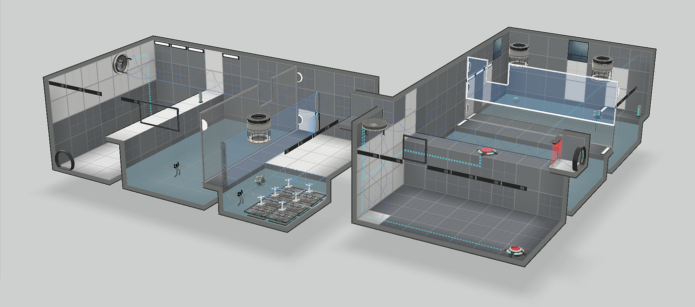
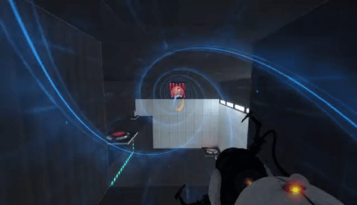

Portal 2 Levels

Portal 2 Levels
In these levels, each room is a mind puzzle that requires players to use portals and Excursion Funnel to bypass the glass wall or fence in the middle of the room.


RECEPTION
In the process of designing these levels, I realized that puzzle design is about making players feel they're smart rather than prove designer is much smarter than players. Thus, most of the puzzle is related to using environment such as lighting, visual pattern or color to give players guidance.
Specifically, in my levels, I pay close attention to the lighting and wall type. I deliberately placed the wall that can open portals in the crucial locations to give players some starting point. I also placed some decoration light to help the player aim at a far distance. These helped players finished the level much easier which maintain the difficulty.